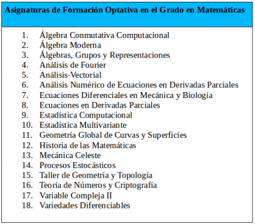
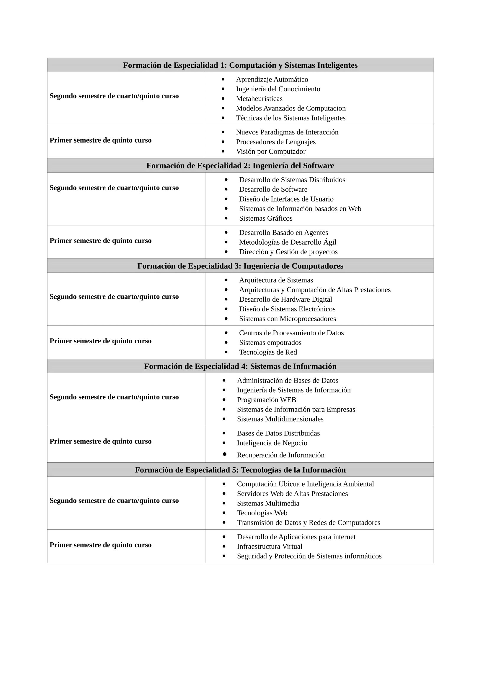

El Doble Grado oferta 18 optativas propias del Grado en Matemáticas, de 6 ECTS cada una. Estas 18 asignaturas se muestran en el siguiente listado. El estudiante tendrá que cursar 5 asignaturas (30 ECTS) de este listado:
El Doble Grado oferta todas las asignaturas propias de los módulos de formación de especialidad del Grado en Ingeniería Informática. Estos módulos y sus asignaturas, con indicación del curso en que se pueden cursar, se muestran a continuación:
Las competencias y objetivos formativos de la asignatura Trabajo Fin de Grado del Grado en Matemáticas con 12 ECTS y de la asignatura “Proyecto Fin de Grado” del Grado en Ingeniería Informática con 12 ECTS se cubren con la asignatura Proyecto Fin de Grado del Doble Grado con 18 ECTS. Adicionalmente esta asignatura, junto con la asignatura Ingeniería, Empresa y Sociedad del Doble Grado” (3 ECTS, que también se cursan en quinto curso), cubren las competencias asociadas a la asignatura Ingeniería Empresa y Sociedad del Grado en Ingeniería Informática.
El Proyecto Fin de Grado del Doble Grado consistirá en un Ejercicio original que se ha de realizar individualmente, presentar y defender ante un tribunal universitario, en el ámbito de las tecnologías específicas y de los conocimientos matemáticos del Doble Grado. Deberá tener naturaleza profesional y sintetizar e integrar las competencias adquiridas en las enseñanzas.